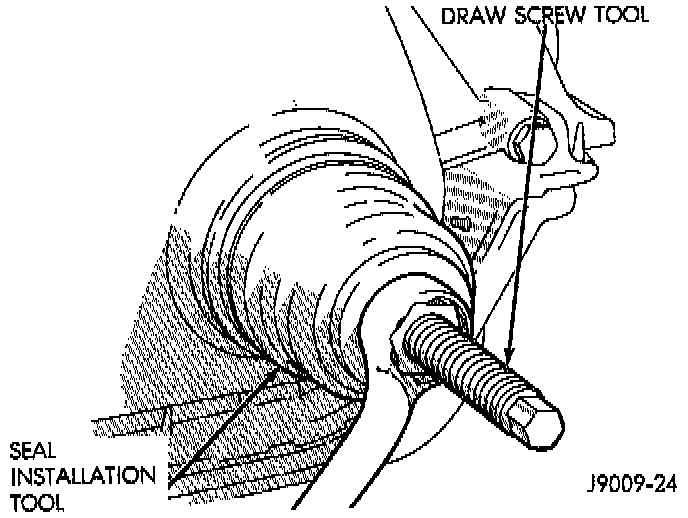

Front Crankshaft Seal: Service and Repair

NOTE: This procedure is done with the timing case cover installed.
REMOVAL
1. Disconnect negative cable from battery.
2. Remove the serpentine drive belt.
3. Remove the vibration damper.
4. Remove the radiator shroud.
5. Carefully remove the oil seal. Make sure seal bore is clean.
INSTALLATION
1. Position the replacement oil seal on Timing Case Cover Alignment and Seal Installation Tool 6139, or equivalent with seal open end facing inward. Apply a light film of Perfect Seal, or equivalent, on the outside diameter of the seal. Lightly coat the crankshaft with engine oil.
2. Position the tool and seal over the end of the crankshaft and insert a draw screw tool into Seal Installation Tool 6139, or equivalent. Tighten the nut against the tool until it contacts the cover.
3. Remove the tools. Apply a light film of engine oil on the vibration damper hub contact surface of the seal.
4. Apply Mopar Silicone Rubber Adhesive Sealant, or equivalent to the keyway in the crankshaft and insert the key. With the key inserted in the keyway in the crankshaft, install the vibration damper, washer and bolt. Lubricate and tighten the bolt to 108 Nm (80 ft. lbs.) torque.
5. Install the serpentine belt and tighten to the specified tension.
6. Install the radiator shroud.
7. Connect negative cable to battery.